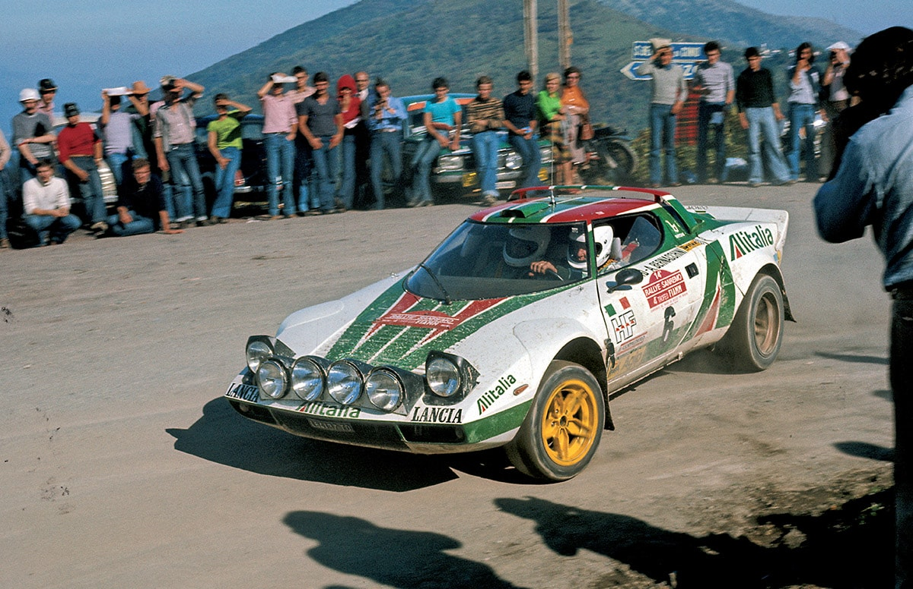

1950s - 1970s
Origins & Early Endurance
Rallying began as simple navigation events across public roads. The legendary Monte Carlo Rally, established in 1911, tested cars against blizzard conditions across mountain passes in the Alps.
By the 1970s, purpose-built sports cars like the wedge-shaped Lancia Stratos proved that lightweight, mid-engine configurations were superior on twisty mountain stages.

"Group B was wild, dangerous, and unforgettable. The cars were too fast for human reaction times."
The Golden Era (1982-1986)
Multimedia Showcase: Group B Monsters
In 1982, the FIA introduced Group B regulations with virtually no limits on turbocharger boost pressure or lightweight materials.
Key Technical Advancements of Group B:
- Quattro All-Wheel-Drive traction replacing 2WD
- Kevlar-reinforced tubular spaceframe chassis
- Antilag turbocharger systems producing over 500 horsepower